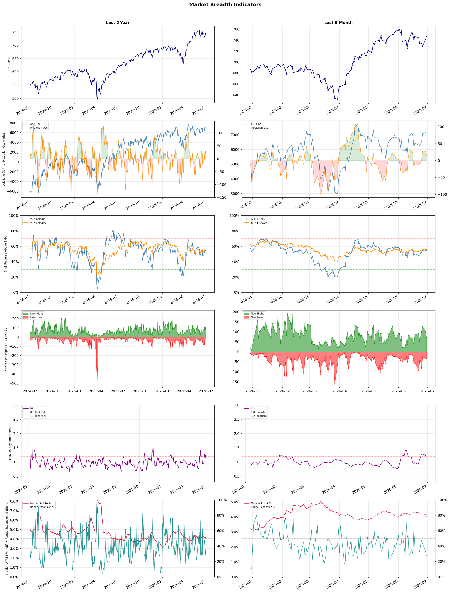

A daily market breadth and sector rotation report for active investors
| Item | Read |
|---|---|
| Regime | Selective Risk-On |
| Risk posture | Selective |
| Universe | 1,348 stocks tracked · 72 new 52-week highs · 30 active swing setups |
| Breadth | 54.2% of tracked stocks are above SMA50 — neutral range, new highs exceed new lows (72 vs 31) |
| Leadership | Semiconductor Equipment & Materials, Airlines, and Healthcare Plans |
| Weakest groups | Gold, Uranium, and Financial Data & Stock Exchanges |
Use this report to prioritize research and chart review; validate entries, stops, liquidity, earnings, and risk before acting.
| Item | Read |
|---|---|
| Primary read | Selective Risk-On regime with Selective risk posture. |
| Research queue | ACMR, AMAT, KLAC, ONTO, FORM |
| Leadership focus | Semiconductor Equipment & Materials, Airlines, and Healthcare Plans |
| Caution list | Gold, Uranium, and Financial Data & Stock Exchanges |
| Review prompt | Check extension risk, chart location, fundamentals, valuation, and earnings before using any research row. |
| Item | Read |
|---|---|
| Primary read | 1 active risk warnings; use screen output as watchlist input only. |
| Bullish screens | ACMR, AMAT, ASML, AAL, HUM |
| Bearish screens | none |
| Alerts / levels | Automated trigger, stop, ATR, liquidity, reward/risk, and event-risk levels are pending future enrichment. |
| Review prompt | Open the linked chart, define trigger and invalidation, then check liquidity and event risk independently. |
Risk Posture: Selective — screen backdrop supports selective research in leading industries
Metric context: McClellan below -50 = elevated selling pressure; below -100 = washout territory. Range Expansion = share of stocks with daily range above their 20-day average. Signal Density = share of tracked names appearing in signal screens.
| Breadth Date | % > SMA50 | % > SMA200 | New Highs | New Lows | McClellan | Median Range | Avg Range | Median ATR14 | Range Expansion | Signal Density |
|---|---|---|---|---|---|---|---|---|---|---|
| 2026-06-30 | 54.2% | 56.0% | 72 | 31 | 18.0 | 3.3% | 3.9% | 4.0% | 27.7% | 4.5% |

Prior comparison date: June 29, 2026
| Metric | Prior | Current | Change |
|---|---|---|---|
| Regime | Selective Risk-On | Selective Risk-On | unchanged |
| Risk Posture | Selective | Selective | unchanged |
| % > SMA50 | 55.0% | 54.2% | -0.8 pts |
| % > SMA200 | 56.2% | 56.0% | -0.2 pts |
| New Highs | 101 | 72 | -29 |
| New Lows | 31 | 31 | +0 |
Top-10 industries entering: Electronic Components. Top-10 industries leaving: Medical Care Facilities. New multi-signal long setups: AAL, ACHC, ACMR, ALAB, ALGM, AMAT, ASML, CGNX, DFTX, EXTR. New multi-signal short setups: none.
| Status | Tickers | Read |
|---|---|---|
| Added | AAL, ACHC, ACMR, ALAB, ALGM, AMAT, ASML, CGNX | New technical screen matches vs prior report. |
| Removed | ABBV, ABCL, ABNB, ABSI, ADPT, ALL, BFLY, CADL | No longer present in today's technical screen matches. |
| Still Active | BB, HUM, LFST, NEO, PANW, TXG | Appeared in both current and prior reports. |
| Promoted | none | Model Screen Score improved by at least 15 points. |
| Downgraded | none | Model Screen Score declined by at least 15 points. |
| Direction | Industry | ETF | Prior Rank | Current Rank | Days | Rank Change |
|---|---|---|---|---|---|---|
| Rose | Building Products & Equipment | XHB | 94 | 7 | 42 | +87 |
| Rose | Household & Personal Products | XLP | 95 | 15 | 28 | +80 |
| Rose | Airlines | N/A | 78 | 2 | 42 | +76 |
| Rose | Furnishings, Fixtures & Appliances | N/A | 98 | 24 | 42 | +74 |
| Rose | Insurance - Property & Casualty | KIE | 79 | 10 | 28 | +69 |
Bull: The Building Products & Equipment sector is likely experiencing a rise in relative strength due to a potential recovery in the housing market, as suggested by headlines like "Is Lennar Finally Turning the Corner After Its Housing Slump?" and "How Is PulteGroup’s Stock Performance Compared to Other Homebuilder Stocks?" This optimism is further supported by the growing demand for construction and mining equipment, as indicated by Zacks' mention of stocks braving industry headwinds, which reflects a resilient infrastructure investment environment amidst broader economic trends. Additionally, the increasing focus on public policy and infrastructure spending could bolster demand for building products, enhancing the sector's growth prospects.
Bear: While the recent headlines may suggest a potential recovery in the housing market, the underlying fundamentals remain concerning, particularly with rising mortgage rates that could dampen buyer demand and exacerbate affordability issues. Furthermore, the optimism surrounding infrastructure spending may not translate into immediate benefits for the Building Products & Equipment sector, as public policy changes can be slow to materialize and may face political hurdles. Additionally, the overall economic uncertainty and potential recessionary pressures could lead to decreased construction activity, undermining the bullish narrative.
Verdict: The Building Products & Equipment sector is likely experiencing a rise due to a combination of anticipated recovery in the housing market and increased demand for construction and mining equipment driven by infrastructure spending. However, a key risk to this bullish outlook is the potential impact of rising mortgage rates, which could suppress buyer demand and affordability, ultimately dampening construction activity and sector growth. Investors should closely monitor mortgage rate trends and economic indicators to assess the sustainability of this upward momentum.
Sources: Yahoo Finance, Google News
Bull: The Household & Personal Products sector is gaining relative strength likely due to its resilience amid mixed consumer stock performance, as highlighted in recent sector updates. The positive outlook from the 2026 Consumer Products Industry report by Deloitte suggests sustained demand for essential goods, which bodes well for companies like Central Garden & Pet and Kimberly-Clark, despite some underperformance concerns. This sector's stability in uncertain economic conditions positions it favorably compared to other industries, driving investor confidence and interest.
Bear: While the Household & Personal Products sector may currently exhibit relative strength, this could be misleading given the broader economic uncertainties and mixed consumer sentiment reflected in recent headlines. The potential for rising inflation and interest rates could dampen consumer spending on non-essential household products, leading to a decline in demand for companies like Central Garden & Pet and Kimberly-Clark. Additionally, the underperformance concerns surrounding Kimberly-Clark suggest that even established players may struggle to maintain growth in a challenging economic environment, raising questions about the sector's long-term resilience.
Verdict: The Household & Personal Products sector is likely gaining strength due to its inherent resilience in providing essential goods, which remains in demand even amid economic uncertainties, as indicated by positive forecasts from industry reports. However, the key risk lies in the potential impact of rising inflation and interest rates, which could curtail consumer spending on non-essential items, thereby challenging growth for companies like Central Garden & Pet and Kimberly-Clark. Investors should monitor economic indicators closely to assess the sustainability of this trend.
Sources: Yahoo Finance, Google News
Bull: The rising relative strength of the airline industry can be attributed primarily to the combination of cheaper jet fuel prices and robust consumer demand, which are setting the stage for a strong summer travel season, as highlighted by MarketWatch. This favorable cost environment, alongside positive sentiment from analysts regarding potential investment opportunities in airline stocks, suggests that the sector is well-positioned for growth despite some recent profit warnings from individual companies like Delta Air Lines.
Bear: While the current narrative highlights cheaper jet fuel and strong demand, it overlooks the significant risks posed by rising operational costs, labor disputes, and potential economic downturns that could dampen consumer spending. Additionally, the recent profit warnings from major players like Delta indicate that the industry's profitability may be more fragile than suggested, raising concerns about sustainability in the face of increasing competition and potential market corrections.
Verdict: The airline industry's rising strength is fundamentally driven by lower jet fuel prices and robust consumer demand, positioning it favorably for a strong summer travel season. However, investors should remain cautious of the key risk posed by rising operational costs and potential economic downturns, as indicated by recent profit warnings from major airlines like Delta, which could threaten the sustainability of profitability in the sector.
Sources: Google News
Bull: The Furnishings, Fixtures & Appliances sector is experiencing rising relative strength primarily due to strong consumer demand and positive earnings reports from key players like La-Z-Boy, which saw a significant 13% surge in its shares following a robust Q4 earnings report. Additionally, the momentum in consumer discretionary stocks, highlighted by Traeger, Inc.'s leadership in the sector, suggests a broader recovery in consumer spending, further bolstering investor confidence in the furnishings and appliances industry. This combination of strong performance and positive consumer sentiment indicates a favorable macroeconomic environment for the sector.
Bear: While the recent surge in La-Z-Boy's shares and the momentum in consumer discretionary stocks may appear promising, underlying economic indicators suggest potential headwinds for the Furnishings, Fixtures & Appliances sector. Rising interest rates and inflationary pressures could dampen consumer spending, particularly on non-essential items like furnishings and appliances, leading to a potential slowdown in demand. Additionally, the strong performance of select companies may not be indicative of the entire sector's health, as many firms could struggle with supply chain issues and increased costs, ultimately impacting profitability and investor sentiment.
Verdict: The Furnishings, Fixtures & Appliances sector is experiencing upward momentum driven by robust consumer demand and positive earnings from key players like La-Z-Boy, indicating a potential recovery in consumer spending. However, investors should remain cautious of rising interest rates and inflationary pressures, which pose a significant risk to consumer spending on non-essential items and could lead to a slowdown in demand across the sector.
Sources: Google News
Bull: The Property & Casualty insurance sector is experiencing a rise in relative strength due to strong Q1 earnings reports from key players like MGIC Investment and Enact Holdings, which indicate robust financial health and effective risk management strategies. Additionally, the recent headlines suggest a growing bullish sentiment among analysts regarding major stocks in the sector, such as Globe Life and Aon, reflecting confidence in the industry's resilience and potential for growth amidst a recovering economy. This positive outlook, combined with favorable market conditions, positions the State Street SPDR S&P Insurance ETF (KIE) as a compelling investment opportunity.
Bear: While recent Q1 earnings reports may appear strong, they could be misleading due to one-time gains or favorable market conditions that are not sustainable in the long term. Additionally, the Property & Casualty insurance sector faces significant headwinds such as rising claims costs, regulatory pressures, and potential economic downturns that could erode profitability. The bullish sentiment among analysts may overlook these fundamental risks, making the State Street SPDR S&P Insurance ETF (KIE) a potentially risky investment at this juncture.
Verdict: The Property & Casualty insurance sector's recent rise is primarily driven by strong Q1 earnings from key players, indicating effective risk management and financial stability amid a recovering economy. However, investors should remain cautious of the significant risks highlighted by the bear case, including rising claims costs and regulatory pressures, which could undermine long-term profitability and impact the attractiveness of the State Street SPDR S&P Insurance ETF (KIE). It may be prudent to monitor these risks closely before making investment decisions in this sector.
Sources: Yahoo Finance, Google News
| Direction | Industry | ETF | Prior Rank | Current Rank | Days | Rank Change |
|---|---|---|---|---|---|---|
| Fell | Oil & Gas Integrated | XLE | 9 | 83 | 42 | -74 |
| Fell | Copper | COPX | 7 | 80 | 28 | -73 |
| Fell | Steel | SLX | 8 | 79 | 28 | -71 |
| Fell | Oil & Gas E&P | XOP | 14 | 84 | 42 | -70 |
| Fell | Other Industrial Metals & Mining | N/A | 14 | 81 | 28 | -67 |
Bear: While the bull analyst highlights the impressive five-year gain of 131% for energy stocks, this historical performance may not be indicative of future trends, especially given the current decline in relative strength and recent softness in energy prices. The broader market's advancement could signal a rotation away from energy stocks as investors seek growth in sectors with stronger momentum, potentially leading to further declines in oil and gas integrated stocks. Additionally, ongoing geopolitical uncertainties, regulatory pressures, and the transition to renewable energy sources pose significant headwinds that could undermine the long-term viability of the oil and gas sector.
Bull: The Oil & Gas Integrated sector is currently experiencing a decline in relative strength due to recent softness in energy stocks, as indicated by multiple headlines reporting declines and a lack of momentum in the sector. Additionally, despite the impressive 131% five-year gain highlighted in the yield on IYE, the recent sector updates suggest that investors may be shifting their focus to other industries, particularly as broader U.S. equities advance, potentially leading to profit-taking in energy stocks. This shift is compounded by mixed sentiment, with some analysts identifying promising trends for select integrated energy stocks, but overall market sentiment appears to be weighing on the sector's performance.
Verdict: The Oil & Gas Integrated sector's decline appears driven by a combination of recent softness in energy prices and a broader market rotation towards sectors exhibiting stronger momentum, prompting profit-taking among investors. Key risks include ongoing geopolitical uncertainties and regulatory pressures, which could further hinder the sector's recovery and long-term viability as the transition to renewable energy accelerates. Investors should consider reallocating to sectors with more robust growth potential while closely monitoring developments in energy markets.
Sources: Yahoo Finance, Google News
Bear: While the bull analyst raises valid points about global manufacturing concerns and competition from gold and silver, it's crucial to recognize that copper's recent rally may be driven by speculative trading rather than fundamental demand. Additionally, the headlines suggest a growing focus on grid resilience and renewable energy, which could lead to increased copper demand in the long term; however, if global economic conditions deteriorate, the immediate impact on copper prices could be severe, overshadowing any potential benefits from these trends. Thus, the current optimism may be misplaced, and a bearish outlook remains warranted given the falling relative strength trend and the risk of a broader economic slowdown.
Bull: Copper's relative strength is likely falling due to concerns over global manufacturing weakness, as highlighted in the headline "If Global Manufacturing Weakens, Here’s What Happens to This Copper ETF." This sentiment is compounded by the competitive landscape with other metals, particularly in the context of the AI boom, where the focus may be shifting toward gold and silver, as suggested by "Copper vs. Gold & Silver: Which Metal Wins the AI Boom?" Additionally, while copper has seen significant price appreciation recently, the headlines indicate a market cautious about potential slowdowns, impacting investor sentiment.
Verdict: The copper industry is experiencing a downturn primarily due to concerns over global manufacturing weakness, which is dampening demand and investor sentiment. While long-term prospects for copper may benefit from trends in renewable energy and grid resilience, the immediate risk lies in potential economic slowdowns that could exacerbate price declines, making it crucial for investors to remain cautious and consider the prevailing bearish sentiment.
Sources: Yahoo Finance, Google News
Bear: While the recent headlines may suggest optimism for the steel industry, the underlying macroeconomic challenges, such as rising interest rates and potential recessions, could significantly dampen demand for steel in construction and manufacturing. Additionally, increasing competition from alternative materials like aluminum and composites, coupled with environmental regulations pushing for greener production methods, could further pressure steel prices and profit margins, undermining the bullish narrative surrounding the VanEck Steel ETF (SLX).
Bull: The relative weakness in the steel industry, as indicated by the falling trend against other sectors, can largely be attributed to macroeconomic factors such as fluctuating demand and pricing pressures. Despite the recent headlines highlighting a surge in the VanEck Steel ETF (SLX) and the positive impact of regulatory support from Washington, the overall sentiment may be tempered by concerns over economic growth and competition from alternative materials, which are reflected in the mixed performance of individual steel producers and the challenges noted in industry analyses.
Verdict: The steel industry's recent decline is primarily driven by macroeconomic challenges, including rising interest rates and potential recessions, which dampen demand in key sectors like construction and manufacturing. The key risk from the bear case lies in the increasing competition from alternative materials and stringent environmental regulations, which could further pressure steel prices and profit margins. Investors should remain cautious and consider the potential for continued volatility in the sector.
Sources: Yahoo Finance, Google News
Bear: While the bull analyst points to volatility and geopolitical tensions as factors supporting higher prices, these same elements create significant uncertainty and risk for the Oil & Gas E&P sector. The recent headlines suggest that despite short-term spikes in crude oil prices, the long-term outlook remains precarious due to potential demand destruction from economic slowdowns, regulatory pressures on fossil fuels, and the ongoing transition to renewable energy sources. Consequently, the falling relative strength trend indicates that investors may be increasingly skeptical about the sustainability of profits in this sector, leading to a bearish outlook.
Bull: The Oil & Gas E&P sector is experiencing a decline in relative strength primarily due to recent volatility in crude oil prices, as highlighted by the $114 spike in crude oil and subsequent pullbacks, which can create uncertainty for investors. Additionally, the headlines indicate supply constraints and geopolitical tensions, such as the Hormuz crisis, which, while supporting higher prices, may also raise concerns about long-term stability and profitability in the sector, leading to a cautious sentiment among investors. As a result, despite potential gains in energy ETFs, the overall market sentiment appears to be weighing on the relative performance of E&P stocks.
Verdict: The Oil & Gas E&P sector's decline is primarily driven by heightened volatility in crude oil prices, which fosters investor uncertainty amidst geopolitical tensions and supply constraints. Key risks include potential demand destruction from economic slowdowns and increasing regulatory pressures as the world shifts towards renewable energy, leading to skepticism about the sector's long-term profitability. Investors should approach E&P stocks with caution, considering the significant risks that could undermine their stability and growth potential.
Sources: Yahoo Finance, Google News
Bear: While the bull analyst points to emerging technologies and energy sources as potential diversions from traditional mining stocks, the reality is that the Other Industrial Metals & Mining sector is facing significant headwinds from rising operational costs, regulatory pressures, and geopolitical uncertainties that are likely to dampen profitability and investor confidence. Furthermore, the falling relative-strength trend suggests a broader market sentiment that is increasingly skeptical about the sector's ability to adapt and thrive amidst these challenges, indicating that any short-term interest in innovative technologies may not be enough to sustain long-term growth in traditional mining stocks.
Bull: The relative weakness of the Other Industrial Metals & Mining sector can be attributed to a combination of macroeconomic factors and sector-specific developments. The headlines indicate a focus on emerging technologies and energy sources, such as the progress in the Wombat Gas Field by Lakes Blue Energy, which may divert investor attention from traditional mining stocks. Additionally, the emphasis on AI in mining, as highlighted by the Boston Consulting Group, suggests a shift towards more innovative sectors, potentially overshadowing the traditional industrial metals market's growth prospects.
Verdict: The Other Industrial Metals & Mining sector is experiencing a decline primarily due to rising operational costs, regulatory pressures, and geopolitical uncertainties that are undermining profitability and investor confidence. While emerging technologies and energy sources may attract short-term interest, the key risk lies in the sector's inability to adapt to these significant headwinds, which could further erode market sentiment and hinder long-term growth prospects. Investors should closely monitor these macroeconomic factors and consider diversifying into sectors with stronger growth potential.
Sources: Google News
| Industry | Rank | ETF | 7d | 14d | 28d | 42d | Chg 42d | Size | 20D | 60D | Composite | Active Setups |
|---|---|---|---|---|---|---|---|---|---|---|---|---|
| Semiconductor Equipment & Materials | 1 | SOXX | 4 | 2 | 9 | 10 | +9 | 17 | 26.8% | 81.7% | 0.975 | 0 |
| Airlines | 2 | N/A | 2 | 7 | 17 | 78 | +76 | 8 | 19.2% | 48.5% | 0.951 | 0 |
| Healthcare Plans | 3 | IHF | 1 | 3 | 13 | 4 | +1 | 10 | 19.2% | 77.2% | 0.934 | 0 |
| Diagnostics & Research | 4 | N/A | 9 | 11 | 26 | 61 | +57 | 16 | 17.4% | 35.4% | 0.901 | 0 |
| Biotechnology | 5 | XBI | 7 | 34 | 51 | 50 | +45 | 93 | 16.8% | 29.4% | 0.887 | 2 |
| REIT - Hotel & Motel | 6 | XLRE | 3 | 6 | 11 | 12 | +6 | 9 | 11.4% | 41.1% | 0.885 | 0 |
| Building Products & Equipment | 7 | XHB | 20 | 20 | 54 | 94 | +87 | 8 | 16.8% | 26.0% | 0.874 | 0 |
| REIT - Office | 8 | XLRE | 5 | 8 | 15 | 24 | +16 | 8 | 12.8% | 50.9% | 0.873 | 0 |
| Electronic Components | 9 | XLK | 10 | 5 | 4 | 8 | -1 | 10 | 9.9% | 77.5% | 0.868 | 0 |
| Insurance - Property & Casualty | 10 | KIE | 14 | 45 | 79 | 37 | +27 | 8 | 15.1% | 19.6% | 0.858 | 1 |
Rank columns (7d–42d) show the industry's rank that many trading days ago — lower is stronger. Chg 42d = rank change vs 42 trading days ago — positive means the industry moved up. 20D and 60D are the mean stock return within the industry over that period. Active Setups: count of today's swing-trade candidates from this industry appearing across all signal screens.
| Industry | Rank | ETF | 7d | 14d | 28d | 42d | Chg 42d | Size | 20D | 60D | Composite | Active Setups |
|---|---|---|---|---|---|---|---|---|---|---|---|---|
| Gold | 88 | GDX | 86 | 76 | 66 | 82 | -6 | 27 | -15.9% | -21.6% | 0.062 | 0 |
| Uranium | 87 | URA | 81 | 80 | 42 | 93 | +6 | 6 | -16.2% | -15.9% | 0.066 | 0 |
| Financial Data & Stock Exchanges | 86 | N/A | 88 | 87 | 96 | 59 | -27 | 7 | -12.9% | -13.4% | 0.070 | 0 |
| Chemicals | 85 | N/A | 83 | 81 | 64 | 25 | -60 | 8 | -22.4% | -17.3% | 0.098 | 0 |
| Oil & Gas E&P | 84 | XOP | 85 | 86 | 84 | 14 | -70 | 26 | -11.2% | -17.2% | 0.162 | 0 |
| Oil & Gas Integrated | 83 | XLE | 80 | 78 | 50 | 9 | -74 | 10 | -13.0% | -14.7% | 0.171 | 0 |
| Agricultural Inputs | 82 | N/A | 87 | 88 | 87 | 53 | -29 | 5 | -5.6% | -17.7% | 0.184 | 0 |
| Other Industrial Metals & Mining | 81 | N/A | 57 | 37 | 14 | 49 | -32 | 21 | -18.0% | 4.8% | 0.211 | 0 |
| Copper | 80 | COPX | 36 | 14 | 7 | 68 | -12 | 6 | -16.2% | -2.0% | 0.231 | 0 |
| Steel | 79 | SLX | 52 | 12 | 8 | 21 | -58 | 5 | -19.6% | 6.8% | 0.238 | 0 |
Rank columns (7d–42d) show the industry's rank that many trading days ago — lower is stronger. Chg 42d = rank change vs 42 trading days ago — positive means the industry moved up. 20D and 60D are the mean stock return within the industry over that period. Active Setups: count of today's swing-trade candidates from this industry appearing across all signal screens.
These are research candidates from top-ranked stocks, capped at five names per industry to avoid over-concentration. Returns shown (60D, 120D, 250D) are historical — they reflect where prices have already moved, not forward expectations. Extension Risk flags names that may require extra patience or a better entry point. They are not buy signals.
Chart: TV = TradingView chart (opens in browser); PDF = local chart file (if downloaded).
| Ticker | Name | Industry | Industry Rank | Market Cap | 60D Hist | 120D Hist | 250D Hist | Extension Risk | Research Reason | Chart |
|---|---|---|---|---|---|---|---|---|---|---|
| ACMR | ACM Research | Semiconductor Equipment & Materials | 1 | N/A | 213.0% | 170.6% | 377.9% | Very extended | Top-ranked in industry; very extended | TV |
| AMAT | Applied Materials | Semiconductor Equipment & Materials | 1 | N/A | 107.5% | 144.2% | 293.4% | Very extended | Top-ranked in industry; very extended | TV |
| KLAC | KLA Corp | Semiconductor Equipment & Materials | 1 | N/A | 98.9% | 116.3% | 235.7% | Extended | Top-ranked in industry; extended | TV |
| ONTO | Onto Innovation | Semiconductor Equipment & Materials | 1 | N/A | 75.6% | 102.1% | 277.6% | Extended | Top-ranked in industry; extended | TV |
| FORM | FormFactor | Semiconductor Equipment & Materials | 1 | N/A | 55.0% | 149.9% | 357.9% | Extended | Top-ranked in industry; extended | TV |
| ULCC | Frontier Group | Airlines | 2 | N/A | 119.7% | 65.5% | 102.3% | Very extended | Top-ranked in industry; very extended | TV |
| AAL | American Airlines | Airlines | 2 | N/A | 66.7% | 15.3% | 56.9% | Extended | Top-ranked in industry; extended | TV |
| UAL | United Airlines | Airlines | 2 | N/A | 47.5% | 15.7% | 69.9% | Constructive | Top-ranked in industry | TV |
| ALK | Alaska Air | Airlines | 2 | N/A | 39.8% | 2.9% | 4.0% | Constructive | Top-ranked in industry | TV |
| LUV | Southwest Airlines | Airlines | 2 | N/A | 36.8% | 21.0% | 53.9% | Constructive | Top-ranked in industry | TV |
| CLOV | Clover Health | Healthcare Plans | 3 | N/A | 204.7% | 102.3% | 90.5% | Very extended | Top-ranked in industry; very extended | TV |
| OSCR | Oscar Health | Healthcare Plans | 3 | N/A | 139.3% | 72.6% | 39.5% | Very extended | Top-ranked in industry; very extended | TV |
| HUM | Humana | Healthcare Plans | 3 | N/A | 123.4% | 41.9% | 57.3% | Very extended | Top-ranked in industry; very extended | TV |
| CVS | CVS Health | Healthcare Plans | 3 | N/A | 40.8% | 28.2% | 48.7% | Constructive | Top-ranked in industry | TV |
| ALHC | Alignment Healthcare | Healthcare Plans | 3 | N/A | 26.9% | 11.8% | 67.6% | Constructive | Top-ranked in industry | TV |
| TWST | Twist Bioscience | Diagnostics & Research | 4 | N/A | 104.9% | 179.0% | 179.9% | Very extended | Top-ranked in industry; very extended | TV |
| NEO | NeoGenomics | Diagnostics & Research | 4 | N/A | 82.4% | 14.0% | 96.9% | Extended | Top-ranked in industry; extended | TV |
| ADPT | Adaptive Biotechnologies | Diagnostics & Research | 4 | N/A | 44.8% | 33.1% | 91.7% | Constructive | Top-ranked in industry | TV |
| NTRA | Natera | Diagnostics & Research | 4 | N/A | 30.5% | 9.1% | 68.9% | Constructive | Top-ranked in industry | TV |
| WGS | GeneDx Holdings | Diagnostics & Research | 4 | N/A | 3.7% | -49.4% | -24.0% | Constructive | Top-ranked in industry | TV |
These are technical screen matches from existing signal files. They are not trade recommendations. Trigger, stop, ATR, liquidity, reward/risk, and event risk still require separate validation until those inputs are available.
Model Screen Score is weighted by signal count, industry rank, freshness, and setup type. It is not a probability of profit, expected return, or suitability rating. Industry cap: max 3 candidates per industry.
Signal glossary: Momentum Pullback = stock in an uptrend that has pulled back 10–30% and shows re-entry conditions. MA Compression = short- and long-term moving averages converging, often preceding a directional move. Three-Day Up/Down = three consecutive closes in the same direction. New 52Wk High/Low = price reached a new annual extreme.
Chart: TV = TradingView chart (opens in browser); PDF = local chart file (if downloaded).
| Ticker | Industry | Setups | Close | Industry Rank | Signal Count | Model Screen Score | Reason | Chart |
|---|---|---|---|---|---|---|---|---|
| ACMR | Semiconductor Equipment & Materials | New 52Wk High; Three-Day Up | 126.89 | 1 | 2 | 100 | Multi-signal; top industry breakout | TV |
| AMAT | Semiconductor Equipment & Materials | New 52Wk High; Three-Day Up | 723.00 | 1 | 2 | 100 | Multi-signal; top industry breakout | TV |
| ASML | Semiconductor Equipment & Materials | New 52Wk High; Three-Day Up | 1989.44 | 1 | 2 | 100 | Multi-signal; top industry breakout | TV |
| AAL | Airlines | New 52Wk High; Three-Day Up | 18.07 | 2 | 2 | 100 | Multi-signal; top industry breakout | TV |
| HUM | Healthcare Plans | New 52Wk High; Three-Day Up | 397.22 | 3 | 2 | 100 | Multi-signal; top industry breakout | TV |
| NEO | Diagnostics & Research | New 52Wk High; Three-Day Up | 14.59 | 4 | 2 | 93 | Multi-signal; top industry breakout | TV |
| DFTX | Biotechnology | New 52Wk High; Three-Day Up | 47.04 | 5 | 2 | 93 | Multi-signal; top industry breakout | TV |
| MRNA | Biotechnology | New 52Wk High; Three-Day Up | 70.03 | 5 | 2 | 93 | Multi-signal; top industry breakout | TV |
| NRIX | Biotechnology | New 52Wk High; Three-Day Up | 24.26 | 5 | 2 | 93 | Multi-signal; top industry breakout | TV |
| PEB | REIT - Hotel & Motel | New 52Wk High; Three-Day Up | 19.41 | 6 | 2 | 93 | Multi-signal; top industry breakout | TV |
| MAS | Building Products & Equipment | New 52Wk High; Three-Day Up | 81.37 | 7 | 2 | 93 | Multi-signal; top industry breakout | TV |
| OUST | Electronic Components | New 52Wk High; Three-Day Up | 62.52 | 9 | 2 | 85 | Multi-signal; top industry breakout | TV |
| ACHC | Medical Care Facilities | New 52Wk High; Three-Day Up | 29.53 | 11 | 2 | 85 | Multi-signal; new-high strength | TV |
| LFST | Medical Care Facilities | New 52Wk High; Three-Day Up | 10.71 | 11 | 2 | 85 | Multi-signal; new-high strength | TV |
| RY | Banks - Diversified | New 52Wk High; Three-Day Up | 206.97 | 12 | 2 | 85 | Multi-signal; new-high strength | TV |
| SAN | Banks - Diversified | New 52Wk High; Three-Day Up | 13.80 | 12 | 2 | 85 | Multi-signal; new-high strength | TV |
| TD | Banks - Diversified | New 52Wk High; Three-Day Up | 121.43 | 12 | 2 | 85 | Multi-signal; new-high strength | TV |
| ALAB | Semiconductors | New 52Wk High; Three-Day Up | 483.02 | 13 | 2 | 85 | Multi-signal; new-high strength | TV |
| ALGM | Semiconductors | New 52Wk High; Three-Day Up | 69.62 | 13 | 2 | 85 | Multi-signal; new-high strength | TV |
| WBS | Banks - Regional | New 52Wk High; Three-Day Up | 76.42 | 18 | 2 | 77 | Multi-signal; new-high strength | TV |
| TXG | Health Information Services | New 52Wk High; Three-Day Up | 38.34 | 22 | 2 | 77 | Multi-signal; new-high strength | TV |
| SN | Furnishings, Fixtures & Appliances | New 52Wk High; Three-Day Up | 152.27 | 24 | 2 | 77 | Multi-signal; new-high strength | TV |
| FCEL | Electrical Equipment & Parts | New 52Wk High; Three-Day Up | 36.01 | 27 | 2 | 70 | Multi-signal; new-high strength | TV |
| HAYW | Electrical Equipment & Parts | New 52Wk High; Three-Day Up | 17.31 | 27 | 2 | 70 | Multi-signal; new-high strength | TV |
| CGNX | Scientific & Technical Instruments | New 52Wk High; Three-Day Up | 72.42 | 28 | 2 | 70 | Multi-signal; new-high strength | TV |
| WRBY | Medical Instruments & Supplies | New 52Wk High; Three-Day Up | 30.34 | 31 | 2 | 70 | Multi-signal; new-high strength | TV |
| BB | Software - Infrastructure | New 52Wk High; Three-Day Up | 12.65 | 36 | 2 | 70 | Multi-signal; new-high strength | TV |
| PANW | Software - Infrastructure | New 52Wk High; Three-Day Up | 341.02 | 36 | 2 | 70 | Multi-signal; new-high strength | TV |
| TENB | Software - Infrastructure | New 52Wk High; Three-Day Up | 36.88 | 36 | 2 | 70 | Multi-signal; new-high strength | TV |
| EXTR | Communication Equipment | New 52Wk High; Three-Day Up | 32.37 | 37 | 2 | 70 | Multi-signal; new-high strength | TV |
How To Use This Report
| Use | Purpose |
|---|---|
| Market map | Start with breadth, regime, risk warnings, and what changed since the prior report. |
| Industry scan | Use leading, deteriorating, rising, and declining industries to focus research. |
| Research queue | Treat long-term candidates as names for deeper fundamental, valuation, and chart review. |
| Technical review | Treat bullish and bearish screen matches as watchlist inputs that require independent trigger, stop, liquidity, and event-risk checks. |
| Source follow-up | Use chart links and source files to verify raw inputs before relying on any row. |
What This Report Is Not
| Not | Meaning |
|---|---|
| Investment advice | The report does not evaluate personal objectives, risk tolerance, tax situation, account type, or suitability. |
| Buy/sell recommendation | Named tickers are research candidates or screen matches, not recommendations to transact. |
| Price target | The report does not provide fair value estimates, targets, or expected returns. |
| Trade plan | Trigger, stop, sizing, reward/risk, liquidity, and event-risk review remain separate user work. |
| Performance claim | Model Screen Score is not validated historical performance or a forecast of future results. |
| Item | Note |
|---|---|
| Version | Daily Report Methodology v1 |
| Model Screen Score | Screen-fit rank based on signal count, industry rank, freshness, and setup type. |
| Not predictive proof | The score is not expected return, probability of profit, historical validation, or suitability analysis. |
| Industry ranks | Composite industry ranks use existing daily ranking outputs and historical rank columns when available. |
| Research candidates | Long-term rows are research candidates from ranked stocks and leading industries, with historical returns labeled as historical only. |
| Technical matches | Bullish and bearish rows are screen matches requiring independent chart, trigger, stop, liquidity, and event-risk review. |
| Source | Status | Rows | Path |
|---|---|---|---|
| Market breadth | present | 1253 | breadth_20260630.csv |
| Industry composite rankings | present | 88 | all_industry_composite_20260630.csv |
| Top ranked stocks | present | 187 | top_ranked_composite_20260630.csv |
| All ranked stocks | present | 1348 | all_stocks_composite_sorted_20260630.csv |
| Top momentum pullbacks | present | 1496 | top_momentum_pullbacks_20260630.csv |
| MA compression | present | 1496 | ma_compression_stocks_20260630.csv |
| Three-day up/down | present | 171 | three_day_up_down_stocks_20260630.csv |
| New 52-week members | present | 103 | breadth_new_52wk_members_20260630.csv |
This report is generated from automated technical screens and is for informational and research purposes only. It is not investment advice, a solicitation, or a recommendation to buy or sell any security. Past performance is not indicative of future results. You are solely responsible for your own investment decisions. Consult a licensed financial advisor before acting on any information herein.